WHAT DO YOU KNOW ABOUT
GLOBAL WARMING?
OUR PLANET IS GETTING WARMER.
Scientists are studying Earth’s climate to answer understand how much and how fast.
The story of understanding climate began in the early 20th century, while studying climate components for weather forecastings.
But let's start from the beginning to understand the process...

FROM CLIMATE TO PHENOMENA
Translating

Cloud
The role of tropospheric clouds in regulating weather and climate remains a leading source of uncertainty in projections of global warming

Precipitation
In meteorology, precipitation is any product of the condensation of atmospheric water vapour that falls under gravity.
Human footprint
It's the effects of human behaviour on the environment
Who?


Aerosol
An aerosol is a colloid of fine solid particles or liquid droplets, in air or another gas.
The presence of aerosols in earth's atmosphere can influence Earth's climate, as well as human health.
Wind
Wind is the flow of gases on a large scale. On the surface of the Earth, wind consists of the bulk movement of air.

Ocean current
An ocean current is a continuous, directed movement of seawater generated by the forces acting upon this mean flow, such as breaking waves, wind, Coriolis effect, cabbeling, temperature and salinity differences and tides caused by the gravitational pull of the Moon and the Sun.
Vegetation
It can regulate the biosphere, like the water, carbon and nitrogen cycle. Vegetation it's also important to regulate the general energetic balance.
Albedo
Also called reflection coefficient, is the diffuse reflectivity or reflecting power of a surface. It is the ratio of reflected radiation from the surface to incident radiation upon it.
Smog
Smog is a type of air pollution.
It influences the temperature.

When

Ice
Is an important component of the global climate and plays an important role in the water cycle.
Revisioning

IPCC report

FROM EQUATIONS
TO SYSTEM
To simulate basic physical phenomenons, scientists had to translate them into complex systems of equations that needed too much time to be calculated.
FROM PHENOMENA TO EQUATIONS
Model used in IPCC
Research center
1960s
Scientists started developing many models since there are many ways to slice up the equations, and the idea that climate is the outcome of intricate interactions started spreading in the scientific community
1970
Instead of dividing the planet into square cells, scientists started dividing the planet into a tier of segments – hemispheres, quadrants, eights, sixteenths etc. (“spherical harmonic”). This method was useful to avoid getting in trouble with Earth’s poles where all the lines converge in a point and mathematics get weird.
1980
Several research groups managed to introduce a facsimile geography into the models, thanks to more computational power.
To avoid models veering off into something impossible, scientists had to adjust parameters violating basic laws of physics to compensate models’ deficiencies. From now on all models had the so called “flux adjustment”.
1990
Progresses in aerosols modeling allowed to produce correct forecasts of climate change after Mount Pinatubo eruption.
1990
- Max Planck Institute developed a scheme for representing stratiform clouds formation (cumulus clouds require a different scheme).
2010
Analysis in the way ocean temperatures were measured after the Second World War revealed that data had been distorted after the war ended. Models had been better that observations so far.
2013
IPCC fifth report is being prepared, in order to be published in 2014.
Clouds, ocean currents, aerosols, vapour are still points of uncertainties, together with vegetation. Scientists should take into account changes in the behavior of plants as heat rises and many other factors that are still under study.
1 hard disk= 10 Terabyte
Research center
Model
SO, ARE THE MODELS PERFECT?
There are different theories and ways to calculate the various mechanisms in models (e.g. water vapour and warming, clouds and radiation, ocean circulation...).
For this reason, models may simulate quite different responses to the same forcing, simply because of the way certain feedbacks are modeled.
Each model responds in slightly different ways that are difficult to predict because of climate sensitivity (how much our climate changes when one factor does?) and climate variability, the natural tendence of climate to change on long term.
Scientific progress solved a lot of problems but still there are some questions that will take time to be answered. When all answers will be found, we will be able to represent precisely our climate shape.
WHO IS TRYING TO ANSWER?
208 RESEARCH CENTERS STUDYING CLIMATE
Research centers from all over the world partecipate in studying climate.
They work constantly to improve models and find answers to unsolved problems.
198 research centers
from 185 countries take part into IPCC
THE MODELS: WHO AND WHEN
THE IPCC
The Intergovernmental Panel on Climate Change (IPCC)
is a scientific intergovernmental body estabilished in 1988.
ITS MISSION:
provide comprehensive scientific assessments of current scientific, technical and socio-economic information worldwide about the risk of climate change caused by human activity, its potential environmental and socio-economic consequences and possible options for adapting to these consequences or mitigating the effects.
Thousands of scientists and other experts contribute (on a voluntary basis, without payment) to writing and reviewing reports.
It provides an internationally accepted authority on climate
change, producing reports which have the agreement of leading
climate scientists.
NUMBERS OF SCIENTISTS THAT PARTECIPATE AT IPCC IN YEARS:
DATA ELABORATED FOR LAST THREE REPORTS:
2001:
0,4 Terabyte
2007:
35 Terabyte
How many data in 2013?
Click to the arrow to see!
2013:
30.000 Terabyte
As you can see, technology is evolving really fast,
as a consequence projections are now more realistic than ever.
HOW WILL THE CLIMATE BE IN 2065
ACCORDING TO THE PROJECTIONS?

SO...ARE THE MODELS RELIABLE OR NOT?
IT'S YOUR TURN TO FIND
THE CONNECTIONS
In the graph below you can find who are the websites that are talking about climate change and what are their main opinions.
Here you can easily find who is telling what and how the websites are linked just by clicking on an opinion.
It's up to you to go deep in the topic and discover more!


A project by:
Clara Gargano
Alessia Mennuni
Matteo Morelli
Dario Monetini
Carlotta Serri
Faculty:
Paolo Ciuccarelli
Marco Fattore
Stefano Mandato
Donato Ricci
Salvatore Zingale
Teaching Assistants:
Matteo Azzi
Giorgio Caviglia
Michele Mauri
Azzurra Pini
Giorgio Uboldi